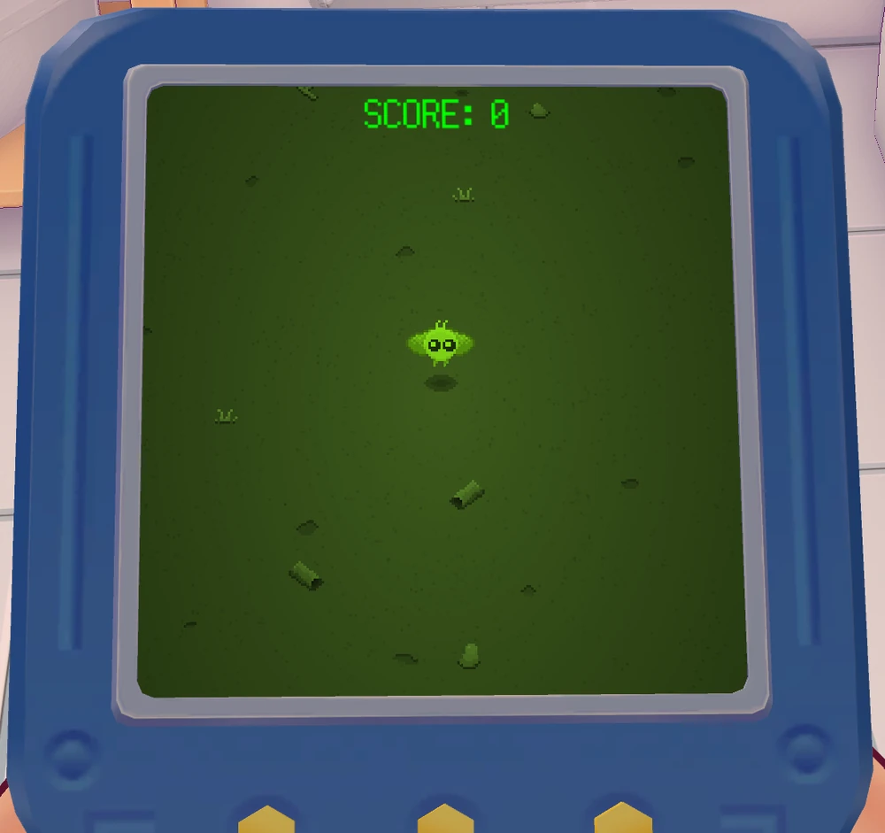
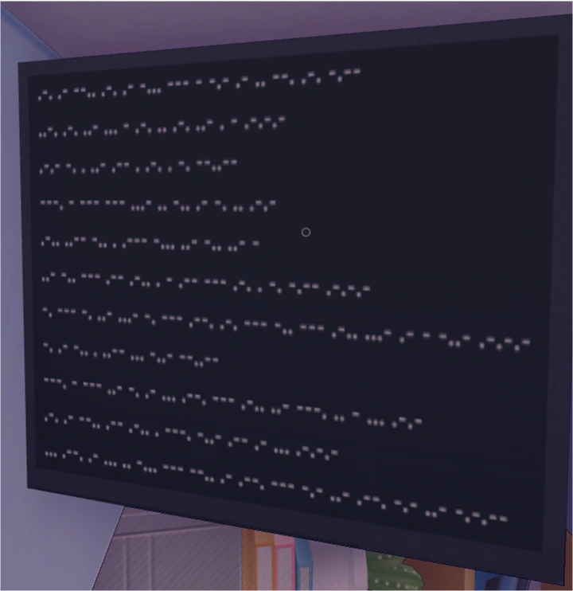
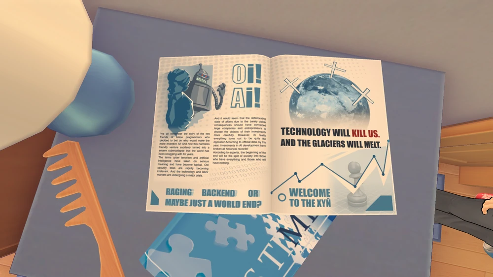
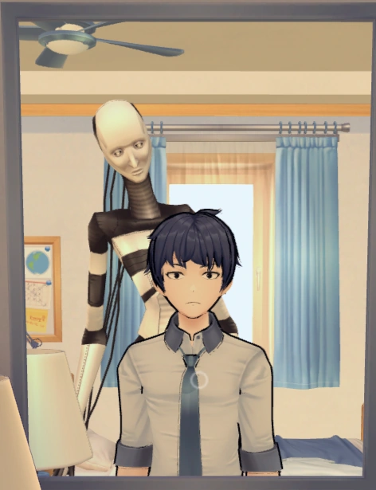
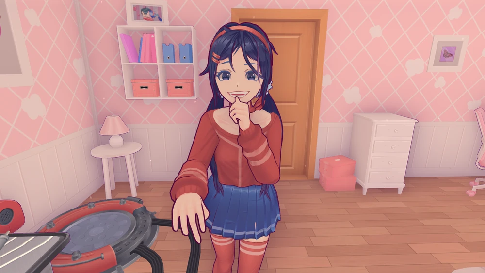
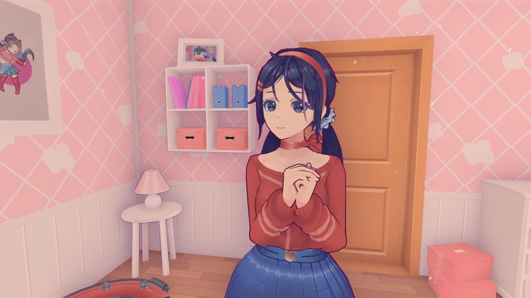
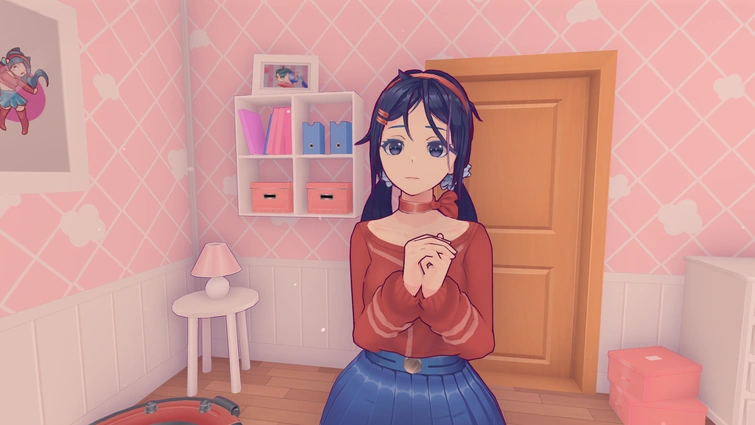

Menù segreto
È possibile che invece di vedere la solita Mita quando si va al menu principale, lo sfondo diventi rosso e il modello sia invece la sua versione Creepy.
Interazioni col menù
Quando si cerca di passare sopra il pulsante Esci nel menu principale, il pulsante cerca di evitare
il cursore.
Se si clicca più volte sul volto di Mita nel menù principale, lei agita la mano davanti al viso e cerca di scacciarvi;
Se si abbassa il volume a 0, Mita ferma il vibing.
Minigioco segreto
Per avviare il minigioco segreto devi rimanere AFK per 2 minuti, in quel momento il personaggio
prenderà dalla tasca una console portatile.

Codice morse
Puoi trovare un codice morse nella stanza del giocatore

"LO SVILUPPO DI UN GIOCO È FRUSTRANTE. NON SONO SICURO CHE LE ASPETTATIVE DELLA GENTE SARANNO SODDISFATTE. MA DOBBIAMO CONTINUARE. SPERO DI POTERVI INTRATTENERE. GRAZIE PER L'ACQUISTO!"
Rivista anti-tecnologia
Nella stanza del giocatore puoi trovare una rivista anti-tecnologia che ritrae un robot simile a Bender di futurama

Mimic
Una figura dall'aspetto inquietante può essere vista all'inizio del gioco nella camera da letto del giocatore. Prima di interagire con il telefono, se il giocatore fissa lo specchio per circa 65 secondi, la figura appare alle sue spalle e se ne va poco dopo. Se il giocatore si gira prima che la figura se ne vada da sola, essa scomparirà automaticamente e non tornerà più.

Pirateria
Se si utilizza una copia pirata del gioco, i nomi suggeriti per primi hanno a che fare con la rapina, ad esempio “ladro”, “rapinatore”, ecc.
Questo, tuttavia, potrebbe non essere sempre vero, in quanto il primo nome suggerito è solitamente il vostro nickname o il nickname/nome del sito pirata. (Ad esempio, se si scarica una copia da un sito di pirateria chiamato ''coffee123'', il primo nome suggerito sarà probabilmente ''coffee123'').
Inserimento del nome
Durante l'inserimento del nome diverse gimmick possono essere triggerate:
“Mita” - Quando si inserisce Mita come nome, la ragazza chiede se questo è il suo vero nome, ma poiché vuole essere l'unica Mita, l'episodio viene riavviato.
Soprannomi degli sviluppatori (“MakenCat” e “Umeerai”) - Mita dirà che è contenta che li conosciate, ma non potrete giocare come gli sviluppatori e ricomincerete l'episodio.
Se si usano numeri nel nome, Mita si lamenterà della mancanza di immaginazione del giocatore.
Se si inserisce una parola oscena, Mita dirà che conosce tutte le parolacce e riavvierà l'episodio.
Quando si inserisce il proprio nome come “Mila”, il gioco si illumina notevolmente. (non testato)
Sorriso di Mita
Quando ci si avvicina a Mita di persona per la prima volta, girandosi si può vedere una rapida inquadratura di lei che si avvicina alle spalle con un sorriso minaccioso. Utilizzando la Freecam, è possibile osservare il sorriso inquietante di Crazy Mita a proprio piacimento finché non si esce dalla Freecam e il giocatore non si gira di nuovo. Ma se si rimane in AFK, Mita si calma e cambia casualmente tra quattro espressioni: felice, confusa, guarda di lato e poi torna a guardare con un sorriso tutt'altro che felice.



La seconda volta che succede è dopo aver mangiato con Mita e lei vi porta in bagno per prendere le medicine. Manterrà questa espressione finché non sarete entrambi in bagno.
Armata di papere
All'inizio del gioco, dopo essere entrati nella versione di Crazy Mita, è possibile trovare e guardare le papere in un ordine specifico, che le richiamerà nella doccia. La prima anatra si trova nel cesto accanto al lavandino, la seconda è in cucina sulla credenza e l'ultima si trova sopra la testa del personaggio dopo aver interagito con lo specchio.